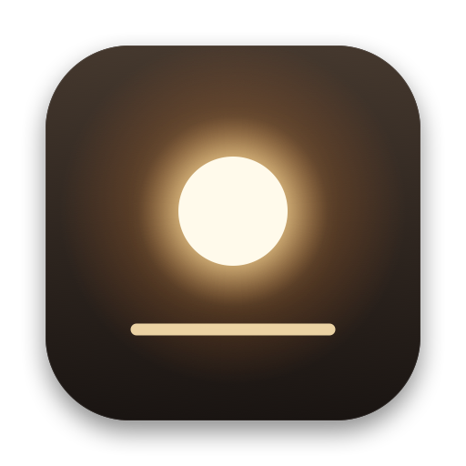
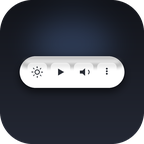
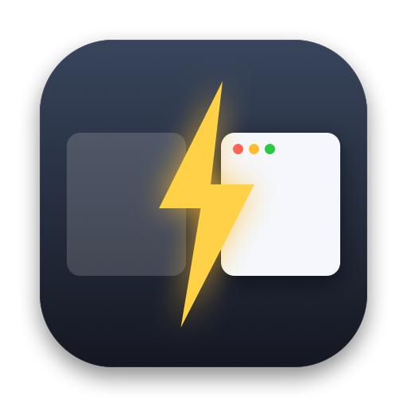
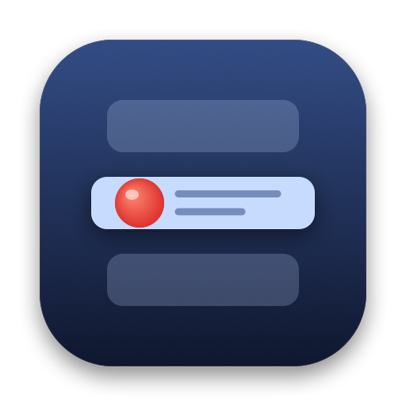
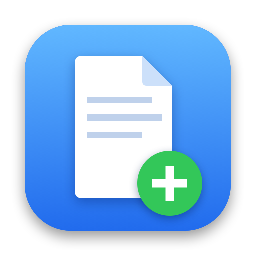

Small, delightful apps
for your Mac.
Little tools that smooth over the rough spots in macOS, and make the most of the new MacBook Pro's screen, logo and hinge. Each one does one thing, and looks like it came with your Mac.
For the new MacBook Pro
WipeMode
Black out the screen and lock the keyboard, trackpad and touchscreen, so you can wipe your MacBook without poking anything.

Free beta · Available nowSteady
Flicker-free dimming for the OLED MacBook Pro: the panel stays bright, the picture gets dim, and your brightness keys work as usual.
Lidlight
Dim, schedule, or let the glowing logo on the new MacBook Pro breathe like the classic sleep light.

Paid · Pre-launchLidkeys
A glass control bar at the bottom of the screen that follows the front app, presses its own menu commands, and never steals focus. Built for the touchscreen MacBook Pro; works with mouse and trackpad too.
For every Mac

Free · NewHop
Switch desktops and full-screen apps instantly. The same Dock, shortcuts and swipes, without the slide.

Free · NewStayPut
Pick your macOS and keep it: stop the upgrade nags, upgrade to exactly the version you want, or go back to an older one.

Free · NewNewHere
Right-click in Finder to create a new Pages, Word, text or code file right where you are.